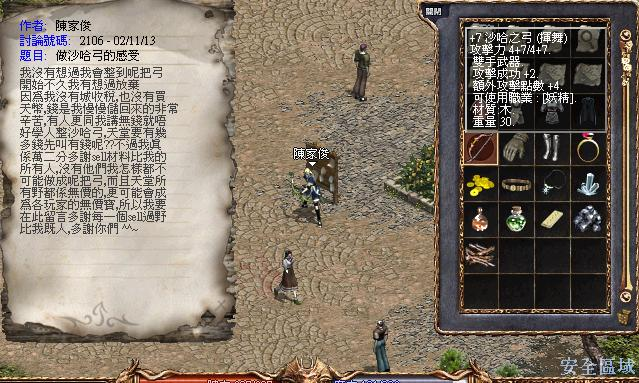

|
2002年11月14日
韓國測試伺服器11月13日更新內容
原文：韓國天堂官方網站公告
英文翻譯：Lineage Compendium
1. 調整了王族及法師任務的怪物難度。
2. 修正了各種任務錯誤。
3. 潘、安特及遺忘之島上的怪物不能復活。
4. 修正了在角色傳送後有時會出現字母"n"的錯誤。
5. 在妖魔城堡內加入倉庫NPC。
6. 禁止將自己的狗隻變身，以解決玩家復活已變身的狗隻所遇到的問題。
韓國正式伺服器11月13日更新內容
原文：韓國天堂官方網站公告
英文翻譯：Lineage Compendium
1. 假如你在地獄系統生效的伺服器上，完成在地獄的懲罰後便可以重登往沒有守衛的燃柳村。
2. 使用魔法相消術在隊伍外的玩家及不是自己的寵物會變紫。
美國新手伺服器11月13日更新內容
原文：美國官方人員公告
1. 骷髏長靴（Skeleton Boots, 自我加速的長靴）改為不能轉移。
2. 巫師之帽(Wizard's Cap)改為不能轉移，重量由150增加至400。
3. 加入了首領級怪物Grim Reaper（死神首領）。
4. 在妖精洞穴中加入黑暗精靈首領Glarielle。
香港愛神出現沙哈之弓

昨天香港愛神出現沙哈之弓了！持有者陳家俊在此感謝各一位賣材料給他的玩家！ |